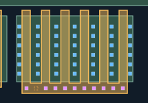
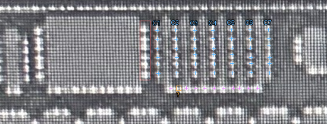

本轮局部增加共栅横带；已审源漏CT与AA保持不变。红框为排除的宽MOS孔列；蓝色C1–C7为当前七列，最右C7现已纳入。边界坐标由AI据用户定性反馈定位，仍待复核。
本页补充与原橙色位置已获用户确认；打开已审版本（53个CT）。
蓝色源漏CT原有42孔保持不变。用户确认六MOS的栅在POLY上相连； 本次将六栅指及下端横带合并为同一POLY实体，六个栅指编号继续保留。
另加入10个有明确照片亮点支持的栅极CT候选，均被共栅POLY完整包围且位于AA之外。 行列位置仍按规则几何重建；一处可能漏检的槽位保留未知，未凭预期补孔。 原图紫色十字为新增栅极接触、蓝色为已审源漏接触；橙框问号仅是待核位置，不是CT对象。横带精确边界及新增CT仍待复核，M1归属未知。
检查六栅共用横带及其接触；其他区域未覆盖。

